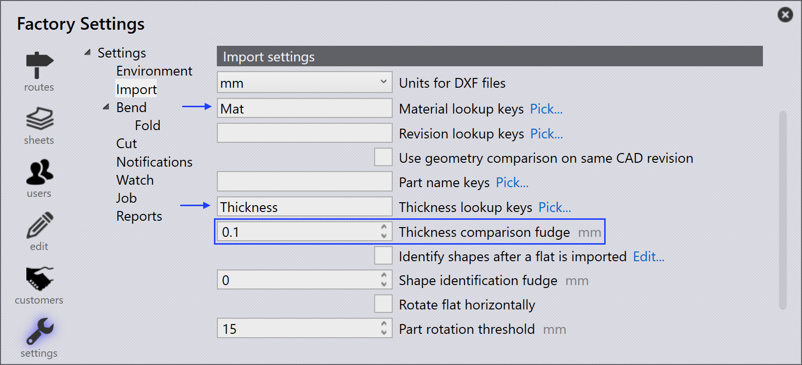

Importar

Output settings
Save flat pattern - Habilite esta opción para guardar el patrón plano de una pieza importada.
Format for flat pattern - Ver JFY Core ajustes. Flat pattern destination - Esta es la ubicación donde se guardará el patrón plano.
Import settings
Units for DXF files - Ver JFY Core ajustes. Material lookup keys - Se pueden asignar varias entradas de búsqueda utilizando un separador de comas entre ellas. Cuando se importa una pieza, Praxis utiliza estas teclas para buscar valores materiales. Los valores buscados se utilizan para resolver la materia prima. Los valores originales se almacenan en la parte Propiedades misceláneas.
Revision lookup keys - Cuando se importa una pieza, el valor de revisión del archivo de pieza sin procesar (el archivo de pieza que se importa) se compara con el valor de revisión existente en el repositorio. La importación se abandona si la revisión es la misma. La asignación de campos personalizados ahora también es compatible con los archivos DXF. Para los archivos DXF, los datos de campo personalizados se extraen de la capa de texto del dibujo o de un archivo adjunto PPI.
Part name keys - Esta opción funciona de manera similar a las claves de búsqueda de material y revisión. Establezca una o más claves de nombre de pieza para usar el nombre de pieza PPI en lugar del nombre de archivo como nombre de pieza.
Thickness lookup keys - Se pueden asignar varias entradas de búsqueda utilizando un separador de comas entre ellas. Cuando se importa una pieza, Praxis utiliza estas teclas para buscar valores de grosor. Los valores buscados se utilizan para resolver el grosor. Los valores originales se almacenan en la parte Propiedades misceláneas.
Thickness comparison fudge - Se utiliza para buscar la materia prima cuando se importa una pieza. Praxis intenta resolver la materia prima después de analizar el nombre y el grosor del material. Para obtener más información, consulte el tema [Thickness fudge] a continuación.
Identify shapes after a flat is imported - Cuando se importa una pieza, las formas internas dentro de la pieza se pueden reconocer e identificar automáticamente.
Shape identification fudge - El valor estimado de identificación de forma se puede establecer en:
-
Nivel global: este valor se utiliza como valor predeterminado para todas las formas.
-
Nivel de forma individual: el valor predeterminado se puede anular estableciendo el valor estimado en el nivel de forma individual. Al seleccionar la forma en el cuadro de diálogo Biblioteca de formas, se muestra el valor estimado. De forma predeterminada, se establece en 0 y se utiliza el valor global predeterminado para dichas formas.
Rotate flat horizontally - Generalmente las mesas de las máquinas de corte son rectangulares y más anchas. Para mejorar la viabilidad de los útiles, gire la pieza a lo largo del ancho de la pieza después de importar la pieza.
Part rotation threshold - Establezca este como el número mínimo para permitir la rotación. Cualquier pieza más pequeña que el valor establecido no se girará.
Misc. settings
Enable pre-import external tools - Habilite la opción de importación de útiles externos preimportados para habilitar Creo Reader. Praxis carga las instancias familiares preextraídas de la pieza caída. Tenga en cuenta que la extracción de la instancia se realiza durante la carga de la pieza (como una operación previa a la importación), por lo que el software Creo debe instalarse en el ordenador desde donde se carga la pieza.
Ignore drawing colors in Flat thumbnails for clarity - Habilite esta opción para generar las miniaturas más nítidas en escala de grises. Los colores de la capa y las entidades de texto se ignoran en aras de la claridad de la imagen.
Use only one Engine for all import tasks - Cuando está habilitado, solo se utiliza un núcleo del motor para tareas importantes.
Estimación de espesor
El Thickness comparison fudge elige el valor de espesor de chapa más cercano cuando un espesor de chapa deseado no está disponible en el inventario comparando el valor de espesor de las chapas en el inventario.Por ejemplo, supongamos lo siguiente:
-
Tenemos una pieza con espesor de chapa de 1,6 mm y material como el acero.

-
El valor Thickness comparison fudge es 0,1 mm.
 -
El inventario tiene chapas de acero con espesor de 1,5 mm, 1,55 mm y 1,7 mm.
JFY Plus elige una chapa con el valor de espesor más cercano después de comparar el valor Thickness comparison fudge (0,1 mm) con el artículo importado (que mide 1,6 mm). En este caso, la selección será de 1,55 mm.